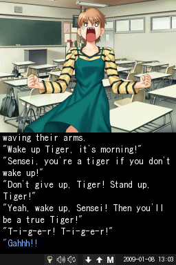

As the name suggests, the DS version is the main version of vnds. Personally, I'd also say that it's the most useful as, otherwise, a lot of these visual novels wouldn't be possible on the DS. Some of them most definitely would be, since vnds is very simple, and VNs like Higurashi have actual, proper DS ports. Of course, those never got English versions, so unless you speak Japanese, vnds is your way to go for Higurashi on the go... In, like, 2014 at least. With things like the Switch, and especially the Steam Deck, its been made obsolete. I still like it, though.
There are a few different versions of the vnds version, but there are only three that have not been lost to time. Luckily, it's the three most recent versions haven't been lost. As someone who is for archiving old materials, it does upset me a little bit that the older versions are lost. Just as some information as to where I've got this idea from, the only place I could find any DS version is on an archived version of the creators website. I've uploaded the versions to archive.org proper since, and there may be other places on the internet they're uploaded, but if so, they're very hard to find.
For the games themselves, it's a slightly better story. Some have been scattered about the internet archive, others are on the porters websites, some are on the vnds website, but the main place I found was a mega link with almost all of them. Still, it didn't have everything, so I've made my own internet archive post with all the vnds novels I could find. Two last things of note are that the difference between the DS novels and the Android novels is resolution, so the DS versions of novels will work on Android, but not the other way around. And the other is that there's no real difference between the basic novels, and the .novel format. The .novel format is just .zip but named differently, basically. You also have converters as well, which depending on the novel, work for both DS and Android, but you need the original PC version of the novel you're converting.